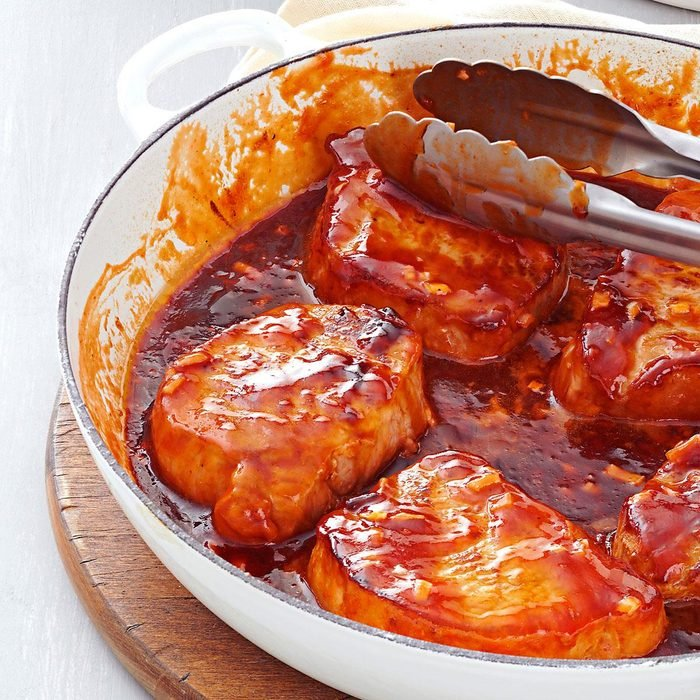

Sweet Barbecued Pork Chops

Description
I often prepare a double batch of these tangy bbq pork chops, then freeze half to keep on hand.
They are so easy and taste so fresh, family and friends never guess this quick entree was frozen!
ingredients
-
2 tablespoons canola oil
-
8 boneless pork loin chops (3/4 inch thick and 8 ounces each)
-
1/2 cup packed brown sugar
-
1/2 cup chopped sweet onion
-
1/2 cup each ketchup, barbecue sauce, French salad dressing and honey
Steps
-
In a large skillet, heat oil over medium heat. In batches, brown pork chops 2-3 minutes on each side. Return all to pan.
-
In a small bowl, mix remaining ingredients; pour over chops. Bring to a boil.
Reduce heat; simmer, covered, 4-5 minutes or until a thermometer inserted in pork reads 145°.
Let stand 5 minutes before serving.